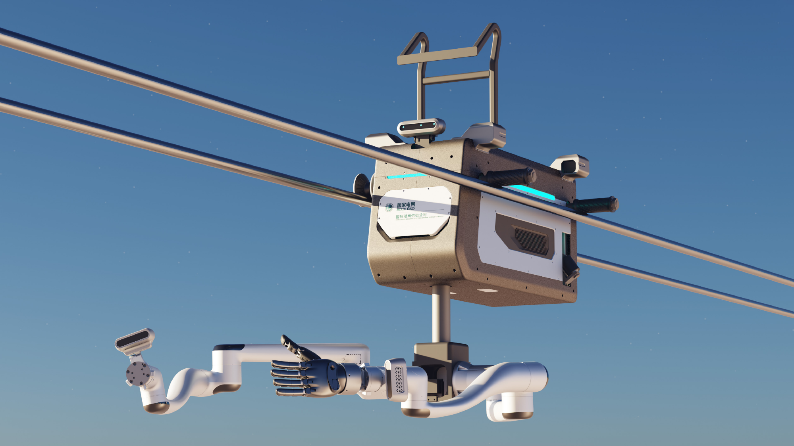

ROBOTDOCK 机器人拓展坞
小背包。
大有可为。
连接夹爪、灵巧手与感知设备。
为 G1 拓展更多可能。
 外观概念图 · 非最终产品
外观概念图 · 非最终产品ROBOTDOCK 机器人拓展坞
连接夹爪、灵巧手与感知设备。
为 G1 拓展更多可能。
外观概念图 · 非最终产品SONIC LINK 遥操作解决方案
VR 设备、遥操软件与机器人拓展坞。
从设备连接，到动作传递。
 团队遥操作实拍
团队遥操作实拍ONE-G CUSTOM 专业定制
机械臂、设备适配与智能硬件。
让产品，贴合你的实际场景。

工业设计作品 · 效果图PRODUCTS & CUSTOM
标准产品与专属方案，都从这里开始。
BUILT FOR ROBOTICS
 团队实拍 / 遥操作使用示例
团队实拍 / 遥操作使用示例FROM PRODUCT TO ACTION
戴上头显，拿起手柄，让动作传递给机器人。Sonic Link 将 VR 设备、遥操软件与小背包组合成一套方案。
了解遥操作解决方案视频为团队技术演示，机器人本体不包含在套装内。
MEET ONE-G